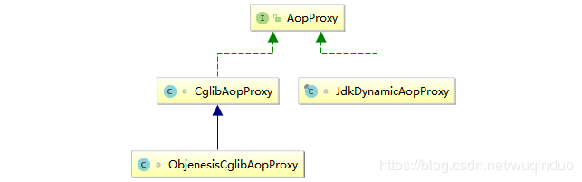
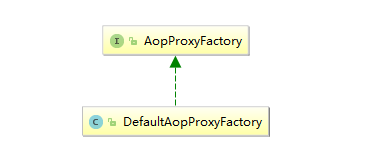
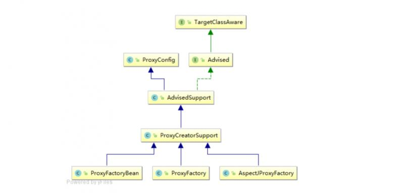
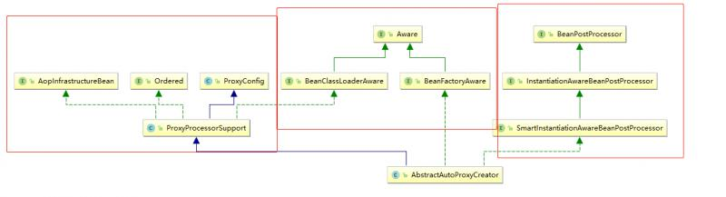

原文连接:https://www.cnblogs.com/smallstudent/p/11724144.html
回顾
首先回顾：
Spring中的InstantiationAwareBeanPostProcessor和BeanPostProcessor的区别
我们得知
JDK动态代理两要素：Proxy+InvocationHandler
CGLB动态代理两要素：Enhancer + MethodInterceptor(Callback)
springAOP底层是通过动态代理和CGLB代理实现的。也就是spring最终的落脚点还应该是在Proxy+InvocationHandler 或者Enhancer + MethodInterceptor上。
带着这个期待我们看看spring是如何组织AOP的,并在动态代理之上建立一个AOP体系的。
概念的理解:
- 通知: 通知可以理解增强器, 就是做的额外工作.
- 连接点: 可以允许切面插入的点, 这个点可以是方法调用时, 抛出异常时等.
- 切点: 并不是所有的连接点都需要被切面插入, 切点就是定义哪些连接点可以插入切面.
总结为：从所有连接点中选出部分连接点, 进行拦截,执行额外操作。
组件的理解:
AOP最早由AOP联盟的组织提出的,制定了一套规范.Spring将AOP思想引入到框架中,必须遵守AOP联盟的规范.
注意:各种组件非常之多. 我只把自认为涉及到主线理解的组件列出
AOP联盟规范定义组件
通知(增强器): 不要纠结于太多. 就统一理解为拦截器或者增强器。
注意一点：这里的MethodInterceptor区别于上文提到的
org.springframework.cglib.proxy.MethodInterceptor不要混了。连接点(被拦截)：spring大多都是对方法调用的拦截, 这里可以理解为方法调用.
spring定义组件
1.Pointcut：定义哪些连接点可以插入切面。提供ClassFilter 与MethodMatcher两种匹配器，匹配连接点。
2.Advisor : 包装Advice和Pointcut .语义: 在哪里拦截, 插入什么样的增强器（在哪里做什么)Advisor=Advice+Pointcut
分为
- IntroductionAdvisor: 引介增强，在不修改某个类的情况下， 让其具备某接口的功能。
- PointcutAdvisor： 与切点有关的Advisor
3.TargetSource: 对目标对象的封装。
4.Advised接口 : 包装 Advisor 与 TargetSource。
实现类AdvisedSupport：从其两个属性上，真切看出其封装了 Advisor 与 TargetSource
- TargetSource targetSource = EMPTY_TARGET_SOURCE; 表示目标对象
- private List
advisors = new ArrayList (); 存储Advisor
5.AopProxy：AOP代理对象
- 分JDK代理（JdkDynamicAopProxy）
- Cglib代理（CglibAopProxy）

JdkDynamicAopProxy与CglibAopProxy都实现了AopProxy的getProxy()方法，用于返回真正的代理对象。
6.AopProxyFactory：AOP代理策略工厂类。根据条件选择使用JDK还是Cglib的方式来创建代理对象。

7.ProxyCreatorSupport: 从其语义上理解，对创建代理对象的支持。我们从其继承关系上看看他是如何提供支持的。
- ProxyConfig: 提供aop配置属性。
- AdvisedSupport:继承ProxyConfig，实现了Advised接口。封装通知（Advise）和TargetSource，并提供对他们的操作
- ProxyCreatorSupport: 包含AopProxyFactory，AopProxyFactory策略工厂提供对JdkDynamicAopProxy与CglibAopProxy的创建

8.AbstractAutoProxyCreator： 从其继承关系。我们分析下这个组件。
- 首先他是一个（BeanPostProcessor）InstantiationAwareBeanPostProcessor 所以他会在spring的Bean生产线createBean()过程中被执行。在BeanDefinition创建Bean的过程中进行拦截，根据要求创建出代理对象。
- Aware: 可以获取到BeanFactory仓库， 与BeanClassLoader加载器。
- ProxyCreatorSupport，继承了创建代理的功能。
关于BeanPostProcessor与InstantiationAwareBeanPostProcessor的理解，还是深刻理解Spring中的InstantiationAwareBeanPostProcessor和BeanPostProcessor的区别。

小结：
如果总结下组件之间的关系：
开发人员定义切面信息--》spring解析出Advice,切点等配置信息--》AopProxyFactory根据配置创建代理对象--》代理方法执行。
这也是springAOP大部分工作内容。
笼统来看：
- 《1》定义的解析：
- 《2》代理的创建：
- 《3》代理的执行：
下面我们重点看看定义的解析与代理的创建。
代理的生成过程:
代理的执行过程:
我们还是以springboot环境下的AOP实现来讲讲AOP的过程.
1.配置AOP的扩展器,拦截BeanDefiniiton创建Bean的过程:AnnotationAwareAspectJAutoProxyCreator:
首先配置AOP环境
@EnableAspectJAutoProxy注解上的@Import(AspectJAutoProxyRegistrar.class)引入AspectJAutoProxyRegistrar类.AspectJAutoProxyRegistrar实现了ImportBeanDefinitionRegistrar接口. 所以其registerBeanDefinitions()会有一些注入BeanDefiniiton的操作 . registerBeanDefinitions()方法会向仓库中注入一个AnnotationAwareAspectJAutoProxyCreator.
@Override
public void registerBeanDefinitions(
AnnotationMetadata importingClassMetadata, BeanDefinitionRegistry registry) {
//注入AnnotationAwareAspectJAutoProxyCreator扩展器
AopConfigUtils.registerAspectJAnnotationAutoProxyCreatorIfNecessary(registry);
AnnotationAttributes enableAspectJAutoProxy =
AnnotationConfigUtils.attributesFor(importingClassMetadata, EnableAspectJAutoProxy.class);
if (enableAspectJAutoProxy.getBoolean("proxyTargetClass")) {
AopConfigUtils.forceAutoProxyCreatorToUseClassProxying(registry);
}
if (enableAspectJAutoProxy.getBoolean("exposeProxy")) {
AopConfigUtils.forceAutoProxyCreatorToExposeProxy(registry);
}
}AnnotationAwareAspectJAutoProxyCreator 间接继承了AOP扩展工具AbstractAutoProxyCreator， 是一个BeanPostProcessor。
AbstractAutoProxyCreator：
- 是一个BeanPostProcessor，可以拦截Bean创建过程
- 继承了ProxyCreatorSupport具有代理类的创建能力。
这样：AOP环境有了。
2.拦截生产过程,创建AOP对象:
createBean()生产线在创建Bean的过程中. 会执行所有的BeanPostProcessor. AnnotationAwareAspectJAutoProxyCreator(AbstractAutoProxyCreator)作为一个BeanPostProcessor也在此时执行.
在Spring中的InstantiationAwareBeanPostProcessor和BeanPostProcessor的区别讲过. 实现了InstantiationAwareBeanPostProcessor接口的BeanPostProcessor的会有5个方法伴随Bean创建过程且执行顺序。
postProcessBeforeInstantiation() -->postProcessAfterInstantiation-->postProcessPropertyValues-->postProcessBeforeInitialization()-->postProcessAfterInitialization()
过程:
(2.1)首先执行的是postProcessBeforeInstantiation 实例化前置处理方法
@Override
public Object postProcessBeforeInstantiation(Class<?> beanClass, String beanName) throws BeansException {
Object cacheKey = getCacheKey(beanClass, beanName);
if (beanName == null || !this.targetSourcedBeans.contains(beanName)) {
if (this.advisedBeans.containsKey(cacheKey)) {
return null;
}
if (isInfrastructureClass(beanClass) || shouldSkip(beanClass, beanName)) {
this.advisedBeans.put(cacheKey, Boolean.FALSE);
return null;
}
}
if (beanName != null) {
TargetSource targetSource = getCustomTargetSource(beanClass, beanName);
if (targetSource != null) {
this.targetSourcedBeans.add(beanName);
Object[] specificInterceptors = getAdvicesAndAdvisorsForBean(beanClass, beanName, targetSource);
Object proxy = createProxy(beanClass, beanName, specificInterceptors, targetSource);
this.proxyTypes.put(cacheKey, proxy.getClass());
return proxy;
}
}
return null;
}主要分为两部分：
(2.1.1)先判断是否应该代理
- isInfrastructureClass(beanClass)如果是AOP基础设施类, 不代理。指的是Advice、Pointcut、Advisor等AOP相关定义类不应该创建代理
- shouldSkip()应该跳过的类，不代理。判断的依据:默认是都不跳过的. 子类可能重写其判断依据.AnnotationAwareAspectJAutoProxyCreator的父类AnnotationAwareAspectJAutoProxyCreator重写了shouldSkip方法（《1》并伴随切面定义的解析）。
重点看看shouldSkip()
/*
1.首先查找适于当前Bean的Advisor .通findCandidateAdvisors()去查找
findCandidateAdvisors()会经过两个渠道获取Advisors.
> BeanFactoryAdvisorRetrievalHelper.findAdvisorBeans():是从仓库中找实现了Advisor类的Advisor
> BeanFactoryAspectJAdvisorsBuilder.buildAspectJAdvisors()会从仓库中取出@Aspect注解的切面类,解析出Advisor
重点说一下其中buildAspectJAdvisors
>遍历BeanFactory仓库中的BeanDefinition,根据其类型判断其是否是isAspect()： 判断条件是类是否被@Aspect注释，并且没有被aspectj编译过
>如果是, 根据当前BeanDefinition创建一个(AspectJAdvisorFactory)BeanFactoryAspectInstanceFactory工厂对象.
>使用AspectJAdvisorFactory 工厂创建List<Advisor>
>上文已经说过Advisor=Advice+Pointcut, Advice 就是对通知的封装(@Before...), Pointcut 是对切点的封装.
小结:这次知道我们定义一个切面类, 被解析什么样子了吧
2.判断找到的CandidateAdvisors中有没有当前BeanDefinition，有的话就跳过。
*/
@Override
protected boolean shouldSkip(Class<?> beanClass, String beanName) {
// TODO: Consider optimization by caching the list of the aspect names
List<Advisor> candidateAdvisors = findCandidateAdvisors();
for (Advisor advisor : candidateAdvisors) {
if (advisor instanceof AspectJPointcutAdvisor) {
if (((AbstractAspectJAdvice) advisor.getAdvice()).getAspectName().equals(beanName)) {
return true;
}
}
}
return super.shouldSkip(beanClass, beanName);
}(2.1.2) 判断是否有自定义的 TargetSource。
如果有自定义TargetSource ，将当前beanName放入targetSourcedBeans缓存中，直接走创建代理的分支，不会走createBean去创建Bean，这里就是给一个机会。 关于自定义TargetSource这个分支暂时不讲。
if (beanName != null) {
TargetSource targetSource = getCustomTargetSource(beanClass, beanName);
if (targetSource != null) {
this.targetSourcedBeans.add(beanName);
Object[] specificInterceptors = getAdvicesAndAdvisorsForBean(beanClass, beanName, targetSource);
Object proxy = createProxy(beanClass, beanName, specificInterceptors, targetSource);
this.proxyTypes.put(cacheKey, proxy.getClass());
return proxy;
}
}总结postProcessBeforeInstantiation工作内容：
- 解析切面定义
- 提供一个机会直接返回代理对象，不走createBean()流水线。自定义TargetSource
(2.2)postProcessAfterInstantiation
- return true ;
(2.3)postProcessBeforeInitialization
- 返回Bean没有做处理
(2.4)postProcessAfterInitialization() （敲黑板，重点）
public Object postProcessAfterInitialization(Object bean, String beanName) throws BeansException {
if (bean != null) {
Object cacheKey = getCacheKey(bean.getClass(), beanName);
if (this.earlyProxyReferences.remove(cacheKey) != bean) {
return wrapIfNecessary(bean, beanName, cacheKey);
}
}
return bean;
}关键便在于wrapIfNecessary方法: 名字 wrap if Necessary 如果满足条件就包装
这个方法就可以拆成两部分看：
- 满足条件：
- 包装：
protected Object wrapIfNecessary(Object bean, String beanName, Object cacheKey) {
//1.自定义TargetSource，已经进行过代理子类生成 。 不包装直接返回Bean实例
if (beanName != null && this.targetSourcedBeans.contains(beanName)) {
return bean;
}
//2.已经判定不需要代理的， 不代理
if (Boolean.FALSE.equals(this.advisedBeans.get(cacheKey))) {
return bean;
}
//3.isInfrastructureClass(bean.getClass())是基础设施类的不代理
//4.shouldSkip(bean.getClass(), beanName)应该跳过的不代理
if (isInfrastructureClass(bean.getClass()) || shouldSkip(bean.getClass(), beanName)) {
this.advisedBeans.put(cacheKey, Boolean.FALSE);
return bean;
}
// Create proxy if we have advice.
Object[] specificInterceptors = getAdvicesAndAdvisorsForBean(bean.getClass(), beanName, null);
if (specificInterceptors != DO_NOT_PROXY) {
this.advisedBeans.put(cacheKey, Boolean.TRUE);
Object proxy = createProxy(
bean.getClass(), beanName, specificInterceptors, new SingletonTargetSource(bean));
this.proxyTypes.put(cacheKey, proxy.getClass());
return proxy;
}
//5.没有具体拦截器的不代理
this.advisedBeans.put(cacheKey, Boolean.FALSE);
return bean;
}我们挨个分析下这两部分
(2.4.1) 满足条件
不代理的情况：
- 自定义TargetSource，已经进行过代理子类生成 。 不包装直接返回Bean实例。（）
- 已经判定不需要代理的， 不代理。 直接返回Bean实例
- isInfrastructureClass(bean.getClass())是基础设施类的不代理。 （上文已经提过）
- shouldSkip(bean.getClass(), beanName)应该跳过的不代理 （上文已经提过）
- 没有具体拦截器的不代理
代理的的情况：
- 有具体Advice的才代理：getAdvicesAndAdvisorsForBean() 的返回不为空的。（Create proxy if we have advice.）
Advisor寻找：重点就落在了此处。
即getAdvicesAndAdvisorsForBean方法，这里进行的便是去容器中寻找适用于当前bean的Advisor，最终调用的是
AbstractAdvisorAutoProxyCreator.findEligibleAdvisors:
protected List<Advisor> findEligibleAdvisors(Class<?> beanClass, String beanName) {
List<Advisor> candidateAdvisors = findCandidateAdvisors();
List<Advisor> eligibleAdvisors = findAdvisorsThatCanApply(candidateAdvisors, beanClass, beanName);
extendAdvisors(eligibleAdvisors);
if (!eligibleAdvisors.isEmpty()) {
eligibleAdvisors = sortAdvisors(eligibleAdvisors);
}
return eligibleAdvisors;
}findCandidateAdvisors: 获取所有Advisor ，前面已经说过。 因为做了缓存此处直接从缓存中取。
- findAdvisorsThatCanApply： 看其传入的参数，candidateAdvisors(所有的候选Advisor)， 也就是这个方法肯定就是从所有的候选Advisor找出适合当前Bean
extendAdvisors： 允许子类添加advisor
适用性判断
findAdvisorsThatCanApply最终调用AopUtils.findAdvisorsThatCanApply:
public static List<Advisor> findAdvisorsThatCanApply(List<Advisor> candidateAdvisors, Class<?> clazz) {
if (candidateAdvisors.isEmpty()) {
return candidateAdvisors;
}
List<Advisor> eligibleAdvisors = new LinkedList<Advisor>();
//第一遍
for (Advisor candidate : candidateAdvisors) {
if (candidate instanceof IntroductionAdvisor && canApply(candidate, clazz)) {
eligibleAdvisors.add(candidate);
}
}
//第一遍
boolean hasIntroductions = !eligibleAdvisors.isEmpty();
for (Advisor candidate : candidateAdvisors) {
if (candidate instanceof IntroductionAdvisor) {
// already processed
continue;
}
if (canApply(candidate, clazz, hasIntroductions)) {
eligibleAdvisors.add(candidate);
}
}
return eligibleAdvisors;
}此方法有两个for循环。
第一个for循环寻找IntroductionAdvisor(引介增强)类型的advisor，调用AopUtils.canApply
第二遍for循环寻找普通的advisor，调用AopUtils.canApply
AopUtils.canApply针对两种类型的Advisor做了不同的判断：
- 针对IntroductionAdvisor类型advisor的，只需要校验Advisor的ClassFilter是否匹配当前类
- 针对普通的advisor：（1）首先查看定的类是否在Pointcut的匹配范围内；（2）是的话，再查看是否能匹配此类任意方法，是的话返回true；（3）不能匹配任意方法，便会用反射的方法获取targetClass(被检测类)的全部方法逐一交由Pointcut的MethodMatcher.matches方法进行检测。
public static boolean canApply(Pointcut pc, Class<?> targetClass, boolean hasIntroductions) {
Assert.notNull(pc, "Pointcut must not be null");
if (!pc.getClassFilter().matches(targetClass)) {
return false;
}
//是否配置任意方法
MethodMatcher methodMatcher = pc.getMethodMatcher();
if (methodMatcher == MethodMatcher.TRUE) {
// No need to iterate the methods if we're matching any method anyway...
return true;
}
IntroductionAwareMethodMatcher introductionAwareMethodMatcher = null;
if (methodMatcher instanceof IntroductionAwareMethodMatcher) {
introductionAwareMethodMatcher = (IntroductionAwareMethodMatcher) methodMatcher;
}
//逐一排查
Set<Class<?>> classes = new LinkedHashSet<Class<?>>(ClassUtils.getAllInterfacesForClassAsSet(targetClass));
classes.add(targetClass);
for (Class<?> clazz : classes) {
Method[] methods = ReflectionUtils.getAllDeclaredMethods(clazz);
for (Method method : methods) {
if ((introductionAwareMethodMatcher != null &&
introductionAwareMethodMatcher.matches(method, targetClass, hasIntroductions)) ||
methodMatcher.matches(method, targetClass)) {
return true;
}
}
}
return false;
}到此，AopUtils.canApply返回true后。findAdvisorsThatCanApply()算是找到了能应用于当前类的Advisors. 再extendAdvisors后；对，应用于当前类的Advisors一番排序后，getAdvicesAndAdvisorsForBean工作完成。
getAdvicesAndAdvisorsForBean()返回如果不为Null。那下面就是包装。
(2.4.2) 包装
在getAdvicesAndAdvisorsForBean返回advisors不为null后，可以创建代理。
protected Object createProxy(
Class<?> beanClass, String beanName, Object[] specificInterceptors, TargetSource targetSource) {
ProxyFactory proxyFactory = new ProxyFactory();
proxyFactory.copyFrom(this);
if (!proxyFactory.isProxyTargetClass()) {
if (shouldProxyTargetClass(beanClass, beanName)) {
proxyFactory.setProxyTargetClass(true);
}
else {
evaluateProxyInterfaces(beanClass, proxyFactory);
}
}
Advisor[] advisors = buildAdvisors(beanName, specificInterceptors);
proxyFactory.addAdvisors(advisors);
proxyFactory.setTargetSource(targetSource);
customizeProxyFactory(proxyFactory);
proxyFactory.setFrozen(this.freezeProxy);
if (advisorsPreFiltered()) {
proxyFactory.setPreFiltered(true);
}
return proxyFactory.getProxy(getProxyClassLoader());
}- 首先创建ProxyFactory 工厂，从AbstractAutoProxyCreator复制代理属性，因为AbstractAutoProxyCreator继承了ProxyConfig，所以本身也是一个代理配置类。
- 判断其是基于类代理， 还是基于接口代理。如果基于接口代理，获取接口，并设置到ProxyFactory 。
- buildAdvisors()方法，整合getAdvicesAndAdvisorsForBean找的advisors 与AbstractAutoProxyCreator. interceptorNames属性可能设置的增强器，统一包装成Advisor类型数组，设置到ProxyFactory 。并且AbstractAutoProxyCreator. interceptorNames属性设置的增强器在前。
- customizeProxyFactory(proxyFactory); 子类可以继续处理ProxyFactory
- 设置ProxyFactory的Frozen属性
- setPreFiltered设置ProxyFactory 的preFiltered
- getProxy 返回代理对象
我们可以看出,这里两大部分：
（1）创建proxyFactory工厂,并配置工厂
（2）proxyFactory.getProxy(getProxyClassLoader())返回代理对象。
proxyFactory.getProxy(ClassLoader classLoader)
proxyFactory.getProxy(ClassLoader classLoader) 首先会先创建一个默认的策略工厂DefaultAopProxyFactory。DefaultAopProxyFactory 会根据proxyFactory是基于接口的代理还是基于类的代理,选择创建JdkDynamicAopProxy对象，或者创建一个CglibAopProxy对象
JdkDynamicAopProxy.getProxy()或者CglibAopProxygetProxy()才是真正返回代理对象。
JdkDynamicAopProxy.getProxy()
@Override
public Object getProxy(ClassLoader classLoader) {
if (logger.isDebugEnabled()) {
logger.debug("Creating JDK dynamic proxy: target source is " + this.advised.getTargetSource());
}
Class<?>[] proxiedInterfaces = AopProxyUtils.completeProxiedInterfaces(this.advised, true);
findDefinedEqualsAndHashCodeMethods(proxiedInterfaces);
return Proxy.newProxyInstance(classLoader, proxiedInterfaces, this);
}我们看到JDK动态代理的两个要素： Proxy+InvocationHandler
InvocationHandler 此时就是JdkDynamicAopProxy，同时JdkDynamicAopProxy封装了advised。这样完美的把advised与JDK动态代理联系在了一起。
接下来就是在内存中生成一个字节码JDK代理类$Proxy66.class，生成真正的代理对象了。
CglibAopProxygetProxy()
（省略部分源码，直奔主题）
// Configure CGLIB Enhancer...
Enhancer enhancer = createEnhancer();
Callback[] callbacks = getCallbacks(rootClass);
enhancer.setInterfaces(AopProxyUtils.completeProxiedInterfaces(this.advised));
return createProxyClassAndInstance(enhancer, callbacks);
}
我们看到了Cglb熟悉的要素Enhancer 。MethodInterceptor去哪了呢？
跟进getCallbacks()方法，会发现此方法会创建一个DynamicAdvisedInterceptor。DynamicAdvisedInterceptor实现了MethodInterceptor，并封装了advisors。
Callback aopInterceptor = new DynamicAdvisedInterceptor(this.advised);这样，CGLB动态代理完美的与advised结合在了一起。
接下来就是在内存中生成一个新的字节码CGLB代理类***$$FastClassByCGLIB$$29e52466，并生成真实代理对象了。
总结
springaop 底层还是JDK动态代理，CGLB动态代理。通过把增强器封装到Advised中，把Advised与InvocationHandler或者MethodInterceptor联系起来，完美的实现AOP技术。
都说事务是根据AOP实现的，趁热打铁，看看事务是如何创建代理的？敬请期待
欢迎大家关注我的公众号【源码行动】，最新个人理解及时奉送。